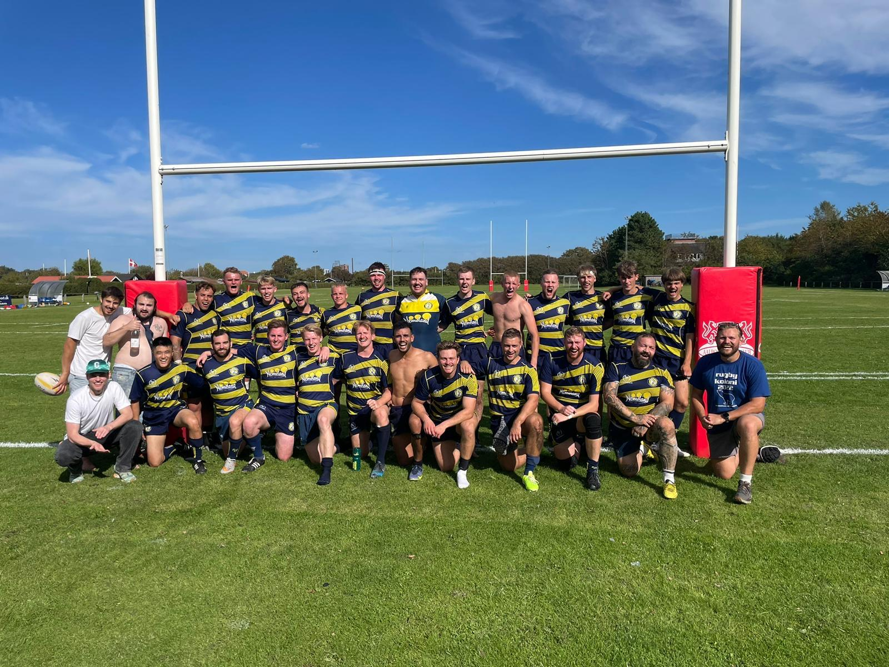

Well/Hej! For some reason you've landed on my personal webpage, I've no idea what could've brought you here but now that you've arrived I may as well tell you a bit about myself. I'm Conor Dyson, originally from Poulacapple East on the border of Tipperary and Kilkenny, Ireland. I’m now based in Copenhagen, Denmark, where I'm pursuing my PhD at the Niels Bohr Institute, University of Copenhagen. My interests broadly lie in black hole perturbation theory but more specifically in applying the self-force formalism to model extreme and intermediary mass ratio inspirals in the strong gravity regime. Within this formalism I (along with many collaborators) focus on including the leading order non-linear effects of the self-force in the motion of the small body, otherwise know as the second order self-force program. Beyond this I also have a keen interest in self consistantly modeling the effects of matter fields such as accretion disk or scalar dark matter canidates on the motion of the small body. So if any of that sounds of interest take a seat back and relax, I hope you enjoy your stay!
Contact: conor.dyson@nbi.ku.dk

About
As I said above, I'm originally from Poulacapple East, a small village on the border of Tipperary and Kilkenny in Ireland. I grew up in a rural area, but attended school at St. Kierans College in Kilkenny where I was fortunate to always have excellent teachers such as Joey Kavanagh and Carl Lynch. I completed my undergraduate degree at University College Dublin, where I then went on to attend Homerton College at the University of Cambridge, where I completed the Part III masters program in the Department of Applied Maths and Theoretical Physics. Following this I then arrived in Copenhagen where I am now based as a PhD student at the Niels Bohr Institute.
But this page is supposed to be about me, not my research. Beyond my passion for physics, I love playing and watching rugby. Growing
up on the border of Munster and Leinster, I got to choose my club — and given my hot take
that Prendergast can't tackle and loses his team's games, and Crowley is the clear choice at 10,
you can probably guess which route I took. I play for the CSR Nanok rugby team in Christianhavn, Copenhagen.

Joining and playing for this club has honestly been one of the greatest joys of my time in
Copenhagen, between the cold dark winter nights training on frozen astroturf to the sunny league games in Aalborg with
a fantastic group of people, it's been a pleasure to be a part of.
To the annoyance of my roommates in recent years I have also taken up playing the Anglo concertina, but somehow we've even managed to organise a few trad sessions with people from the Institute! I think we're still a bit away from a public show though!
In terms of my other interests outside of physics, I have a passion for art and listening to music. Some of my favorite songs include:
- Fontaines D.C. – "Bug"
- Arctic Monkeys – "Do I Wanna Know?"
- Lisa O'Neill – "All the Tired Horses"
- Hak Baker – "Windrush Baby"
- Radiohead – "All I Need"
Also some paintings I've taken a particular liking to over the years include:
- Carl Bloch — In a Roman Osteria
- Jan Matejko — Stańczyk
- Caspar David Friedrich — Wanderer above the Sea of Fog
Research
I am a member of the Center of Gravity (formerly the strong gravity group) at the Niels Bohr Institute. My research focuses on gravitational self-force, the primary method for modeling extreme mass ratio inspirals (EMRIs)—systems in which a compact object orbits a much larger supermassive black hole. I study these systems both in vacuum and in the presence of astrophysical environments. The primary goal of my research is to develop precision gravitational waveforms and to understand novel nonlinear effects in both vacuum and environments in contexts of EMRIs. The overarching science goal of this work is to support the development of waveforms and astrophysical modeling for the upcoming LISA mission, planned for launch in 2035.
Below you can find some of my featured publications and links to my profiles on INSPIRE and ADS. For a more comprehensive list of my publications, please visit my INSPIRE profile. If you're interested in reading more about the strong group, you can also take a look at the Strong Gravity Group website.
Download CVFeatured Publications
- [1] C. Dyson, T. Spieksma, R. Brito, M. v.d. Meent and S. Dolan — Environmental effects in extreme mass ratio inspirals: perturbations to the environment in Kerr #1. Physics Review Letter. [link]
- [2] C. Dyson, J. Redondo-Yuste, M. v.d. Meent, V. Cardoso — Relativistic Aerodynamics of Spinning Black Holes #2. Physics Review D, 2024. [link]
- [3] C. Dyson, M. v.d. Meent — Analytic solutions to plunging geodesics in Kerr #3. Classical and Quantum Gravity, 2023. [link]